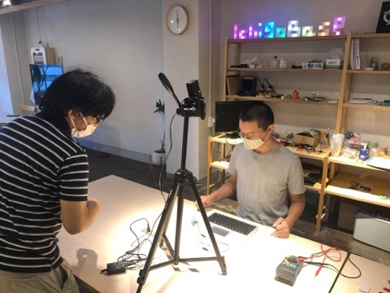
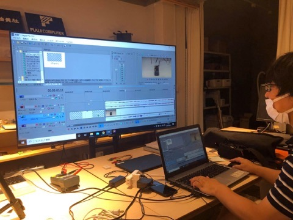
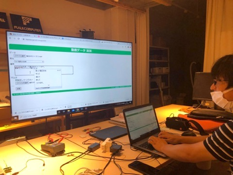
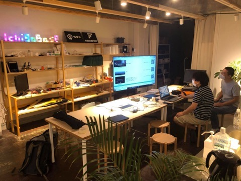
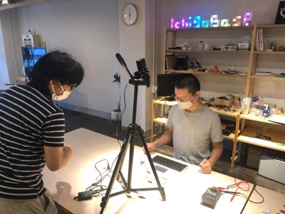
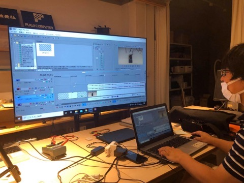
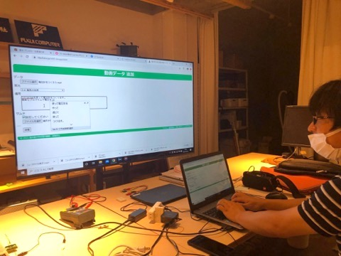
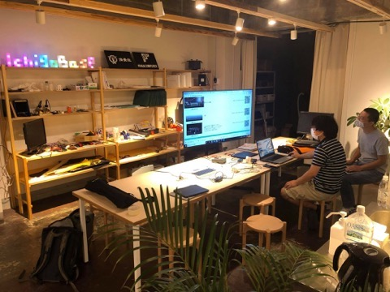

手軽に作ろう教材動画！「福井県理科教育資料」に「乾電池の電圧」動画追加！
中学校理科の先生と動画教材を作ってみることに。

何はともあれ撮影、カメラは一般的なビデオカメラ、題材は「電池の電圧測定」。

撮れた動画素材を編集、今回は動画編集ソフト「VEGAS」、シンプルで使いやすいっ。

できた教材動画は「福井県理科教育資料」にアップロード。
完成！

オトナとコドモの秘密基地「IchigoBase」で、今度は「教材動画 作成ハンズオン」やってみよう！
中学校理科の先生と動画教材を作ってみることに。

何はともあれ撮影、カメラは一般的なビデオカメラ、題材は「電池の電圧測定」。

撮れた動画素材を編集、今回は動画編集ソフト「VEGAS」、シンプルで使いやすいっ。

できた教材動画は「福井県理科教育資料」にアップロード。
完成！

オトナとコドモの秘密基地「IchigoBase」で、今度は「教材動画 作成ハンズオン」やってみよう！

Create small and grow it big. 小さく生んで大きく育てる。
書道伝 タミヤロボットスクール コンデレ IchigoLatte OpenVBS MINIScript ZOZO PCN かにロボコン NaturalStyle
-----BEGIN PUBLIC KEY----- MIIBIjANBgkqhkiG9w0BAQEFAAOCAQ8AMIIBCgKCAQEAv+vwNo4IxtbeZj1CtxlquflayP6Q0xh9V6OuWTEF/2TEhmtZiuHZtEVGl5rd3EFmiezgL6FKikvMfmw7FkwKCBYOArcgy1r7piFVmL6+V07RnrQjJr2autGSpF8ETTWp/M5U/zCBj2ZfoGFkRdyA0GClgB3oLAB8TIHC5cFRuyGtDyH8yl9XL1IOfWkggP6EPXyXfjNCF/UHSERpVMebXpopvM1tx2sTxZx6Gw7wdAs+kJQg47rQKz1Cb0QUzhfPEs41uEgRCxtz50gl/8VLrRbSGGEeonctEvt/SyWa7GbbnX0Q82mg+Mh5s9GpDtFtXY+JfEsFlpNjEtIU9eAbgwIDAQAB -----END PUBLIC KEY-----